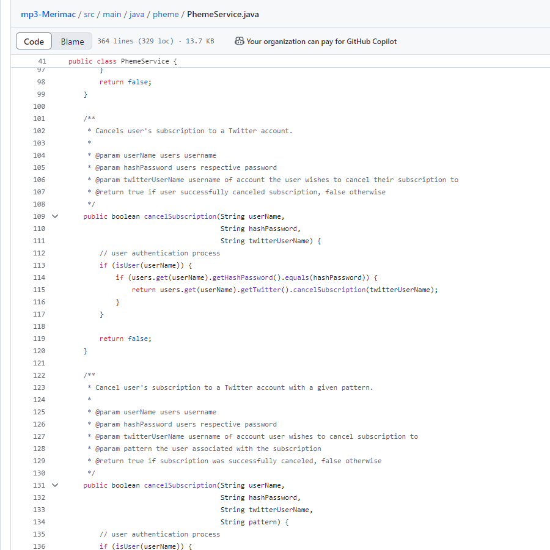
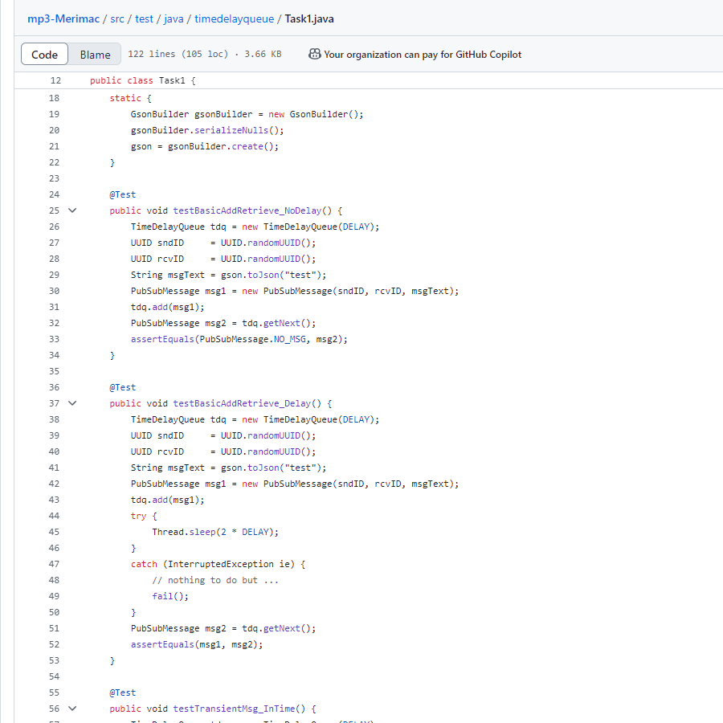

Thanks for checking out my projects!
Click on a project tab to learn more about it, and click on an image to zoom in!
Description: An individual project, designing a website using the VitePress static site generator to host a blog dedicated to Japanese language acquisition.
Being an individual project, I was responsible for all tasks, including writing code, troubleshooting, writing the blog contents, preparing media files, and so on.
The blog can be accessed here, and the GitHub repository here.


Relevant Skills: HTML/CSS/JS, Vue.js, Vite + VitePress, Static Site Generation, Content Creation, Version Control, Frontend Development, UI/UX, Website Hosting.
Description: A pair-based project to program a robot capable of navigating a virtual environment in a Gazebo (physics) simulation. Emphasis was placed on the robot's ability to recognize and read letters on signs. To do this, we trained a convolutional neural network (CNN).
I implemented computer vision functionality, such as edge detection, color detection, and motion detection. I also worked with my partner to design a MVC GUI for testing purposes and to train a CNN for optical character recognition. The neural network was very consistent, correctly identifying letters over 99% of the time.
The robot is also able to drive autonomously thanks to its image processing capabilities (ability to detect road edges) and a PID control loop.
At an end-of-term robot competition, my partner and I placed 3rd out of ~20 teams.


Relevant Skills: Python, Image Processing, Deep Learning, PID, CNNs, OpenCV, PyQt, NumPy, OCR, Linux + Bash.
Description: A team-based project to design a robot capable of following tape around a race track. This multi-disciplinary project includes mechanical and electrical engineering, software development, control theory, and so on.
I programmed a PID control loop and a signal convolution script for IR detection using the STM32 microprocessor and Arduino. I also worked with electrical lab equipment (oscilloscopes, function generators, etc.) to analyze electrical circuits.
In terms of hands-on skills, I became experienced working with wire crimps, soldering irons, laser cutters, and 3D printers.
Ultimately, our team's robot was able to drive significantly faster and more smoothly than most teams, and we were semi-finalists in a competition pitting all the robots against each other.


Relevant Skills: C/C++, Arduino, STM32 Microprocessor, CAD (Onshape), Signal Processing, Control Theory, Soldering, Wire Crimping, Circuit Design, Lab Equipment.
Description: In my microcomputers course, I designed the following FPGA designs as part of my laboratory work. For hardware, I used the DE0-CV FPGA board, and on the software side, I worked in Quartus and wrote code in the VDHL language.
Examples of projects completed include a 24-hour clock, scrolling digits display, and 8-bit calculator (the four basic operations, modulo, and square root).
Relevant Skills: Low-Level Programming, FPGA Design, Quartus, VDHL, Assembly, I/O Processing.
Description: A research project, analyzing a topic in thermodynamics. This was the final project of my thermodynamics course, and was compiled into a presentation.
My research topic was on the numerical analysis of heat flow in high-purity copper wires.
I used SageMath (similar to MATLAB) to perform nonlinear regression on data extracted from graphs, and I also numerically solved a non-linear, second order ODE using the Runge-Kutta method to obtain the equilibrium temperature distribution.
To design a technical slideshow, I leveraged my skills with LaTeX to create a set of Beamer (presentation document class) slides.

Relevant Skills: Thermodynamics, Numerical Methods, Non-linear Regression, Differential Equations, Technical Communication, SageMath, LaTeX, Beamer.
Description: Throughout my time at UBC, I have been a member of two student-run engineering design teams.
The first design team I was a part of was UBC Steel Bridge, whose annual goal is to design a 1:10 scale steel bridge. I was a member of the Drafting sub-team from 2021 to 2023—in 2022, UBC placed 2nd at the Canadian National Steel Bridge Competition.
During my time with UBC Steel Bridge, I worked with Autodesk AutoCAD and Inventor to create 3D models and drawings for bridge parts, also utilizing Microsoft Excel to calculate distances and part sizes using trigonometric formulae. I was able to integrate into the team well and contributed actively to design discussions.


The second is UBC Orbit, a satellite design team with plans to launch a CubeSat into space in 2027. I joined the Attitude and Orbit Control Systems (AOCS) sub-team in 2024, and am currently a member.
With UBC Orbit, I use our team's in-house Python physics simulation and my knowledge of kinematics and classical mechanics to help control the satellite's positioning. The project is very intricate, and I appreciate how everyone's work combines to form a whole that is more than the sum of its parts.

Relevant Skills: Autodesk AutoCAD/Inventor, 3D Modelling, Engineering Drawings, Python, Zero-Gravity Physics Simulations, Rigid Body Dynamics.
Description: A team-based software project to create a multithreaded Java framework that interfaces with the X (Twitter) API to pull tweets and store them in a time-sensitive queue. Emphasis was placed on the importance of unit testing, which was done using the JUnit library.
I utilized Gradle as the main project build tool and worked with JUnit to perform blackbox/whitebox unit tests. I also made use of advanced Java data structures such as DelayQueue and ConcurrentHashMap.
By writing comprehensive unit tests, I was able to obtain over 90% code coverage.


Relevant Skills: Java, Gradle, JUnit, OOP, Multithreading, Network Programming, Unit Testing, Blackbox/Whitebox Tests, Backend Development.
Description: The final project of my experimental laboratory course.
The goal was to design a circuit capable of regulating the angular velocity of a servo motor. The velocity is printed to a 7-segment display and controlled using an error signal.
I handled lab tools including function generators, waveform analyzers, and DMMs to construct the entire circuit. I also worked with various circuit components, such as transistors, counters, potentiometers, DACs, diodes, capacitors, buffers, etc.
To make sure my work was both understandable and reproducible, I maintained well-documented lab notes. My experience with effective note-taking has since served me well in various endeavours (work, school, and so on).
Relevant Skills: Lab Equipment, Circuit Wiring, Oscilloscopes, Technical Troubleshooting, Control Loops, Digital & Analog Circuit Components.
Description: A team-based effort to develop a visual novel using the Ren'Py game development framework.
Visual (or kinetic) novels are interactive story-driven experiences that blend engaging narratives with captivating visual art/audio and player-driven decision-making.
I led a three person team and was responsible for the programming, music, and background graphics. I was also partially responsible for the dialogue. Other team members worked on dialogue and character graphics.
I'd like to highlight the soundtrack in particular, which you can take a listen to here.
Relevant Skills: Software Development, Game Development (Python), Graphic Design, Image Editing, UI/UX, Creative Writing, Music Production
Description: I like to self-study various topics in math. To share my findings, as well as some of my original thoughts, I started a blog where I post about mathematical ideas, titled Romance on a Parabola.
My goal was to design it to appear similar to online math textbooks, so I used MathJax and the PreTeXt LaTeX library. It's a great opportunity for me to practice technical communication, and I also get to work with GitHub, XML, and HTML/CSS/JS.
The blog can be accessed here.
The final image is of a Julia set, which I rendered in the Windows Powershell command line (CLI).
Relevant Skills: Applied Mathematics, Technical Communication, Website Design, LaTeX + PreTeXt, MathJax, Software Development.
Description: My favorite creative hobby is scoring and producing music.
I am proficient in the use of musical notation software, e.g. MuseScore, Finale. I am also experienced with producing music in digital audio workstations such as REAPER and FL Studio.
I use industry standard tools, including Kontakt 7, Ozone 10, Synthesizer V, and Xfer OTT, among others.
As for genres, I write music in a variety of styles: pop, orchestral, piano solo, ... Please check out my work via YouTube.
Relevant Skills: Songwriting, Music Mixing + Mastering, Video Editing, Musical Notation + Scoring, Orchestration, MuseScore, REAPER, FL Studio, VST/VST3.